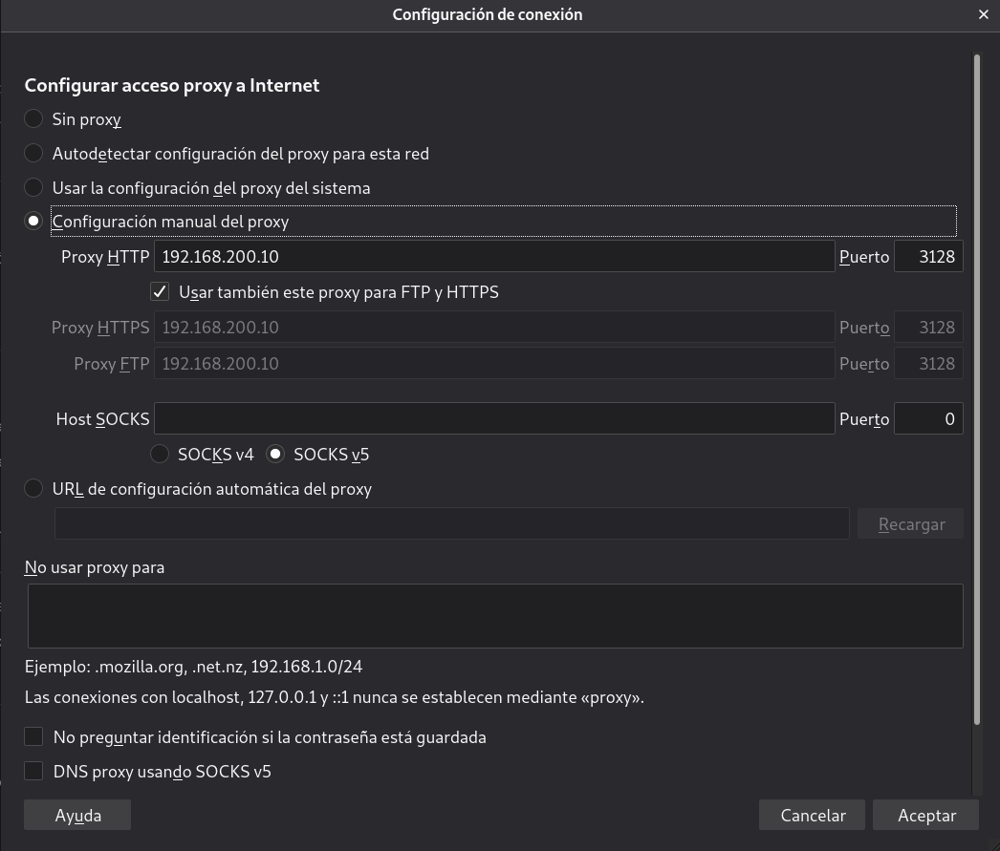
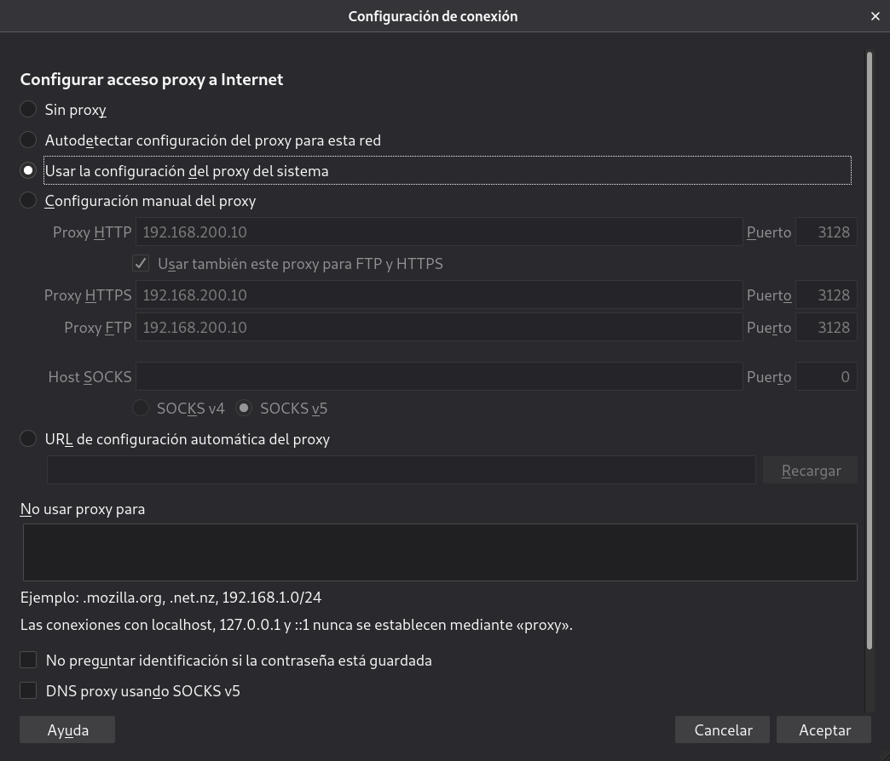
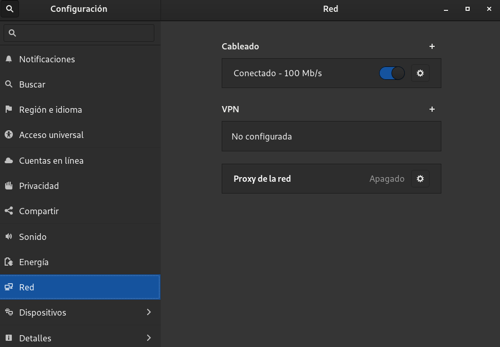
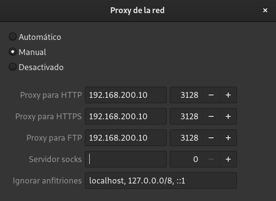
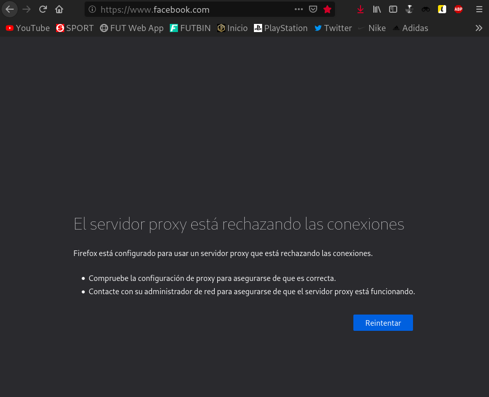
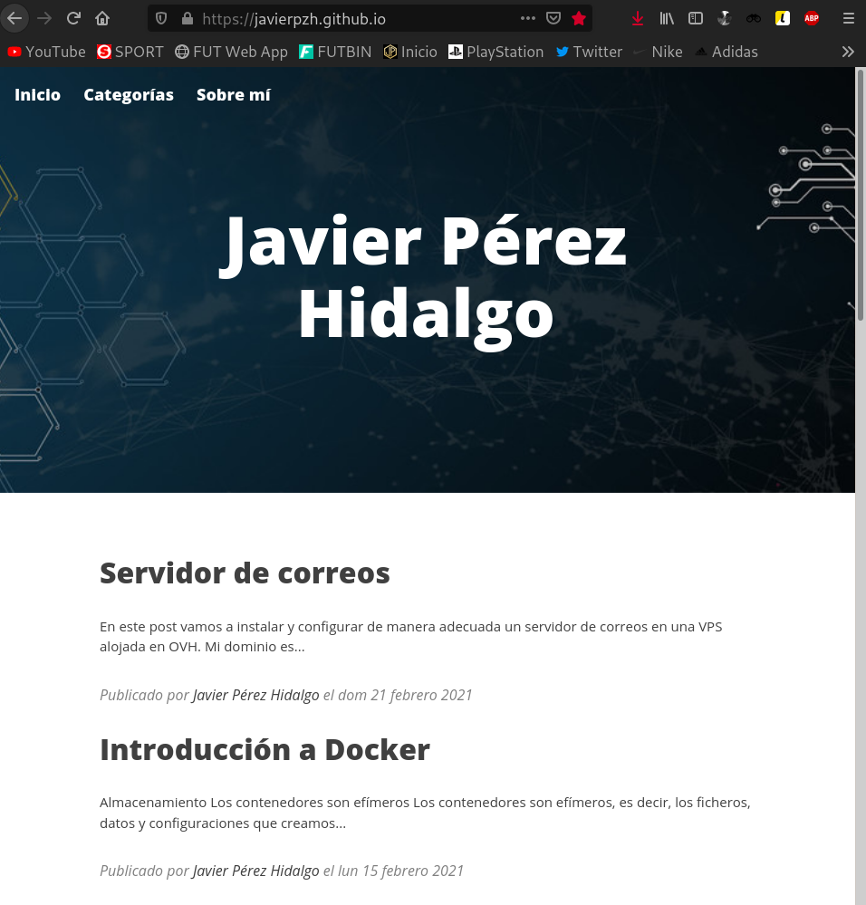
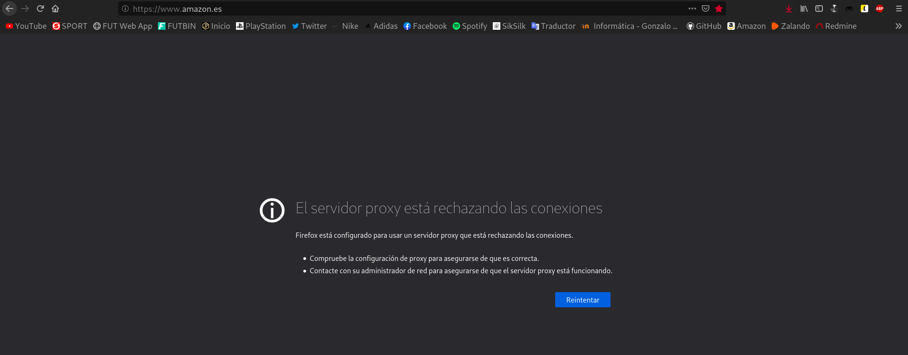

-
Tarea 1: Instala squid en la máquina squid y configúralo para que permita conexiones desde la red donde este tu ordenador.
-
Tarea 2: Prueba que tu ordenador está navegando a través del proxy (HTTP/HTTPS) configurando el proxy de dos maneras diferentes:
-
Directamente indicándolo en el navegador.
-
Configurando el proxy del sistema en el entorno gráfico (tienes que indicar en el navegador que vas a hacer uso del proxy del sistema).
-
Muestra el contenido del fichero /var/log/squid/access.log para comprobar que está funcionando el proxy.
-
Tarea 3: Configura squid para que pueda ser utilizado desde el cliente interno. En el cliente interno configura el proxy desde la línea de comandos (con una variable de entorno). Fíjate que no hemos puesto ninguna regla SNAT y podemos navegar (protocolo HTTP), pero no podemos hacer ping o utilizar otro servicio.
-
Tarea 4: Con squid podemos filtrar el acceso por url o dominios, realiza las configuraciones necesarias para implementar un filtro que funcione como lista negra (todo el acceso es permitido menos las url o dominios que indiquemos en un fichero.)
-
Tarea 5: Realiza las configuraciones necesarias para implementar un filtro que funcione como lista blanca (todo el acceso es denegado menos las url o dominios que indiquemos en un fichero.)
Proxy inverso
Opción 1
Para hacer esta práctica puedes utilizar el escenario del ejercicio anterior.
En este caso queremos instalar dos servidores web en el apache1 y en apache2, estos servidores deben servir una web completa (con hoja de estilo, imágenes,…) busca alguna plantilla (debe tener algunas páginas html para probar los enlaces).
Configura en el ordenador balanceador (tienes que detener haproxy) un proxy inverso para acceder a las aplicaciones de dos formas distintas:
Opción 2
En una máquina instala docker e instala con docker-compose dos aplicaciones: joomla y nextcloud. Instala un proxy inverso para acceder a las aplicaciones de dos formas distintas:
- Tarea 1: Para que se acceda a la primera aplicación con la URL www.app1.org y a la segunda aplicación con la URL www.app2.org.
- Tarea 2: Para que se acceda a la primera aplicación con la URL www.servidor.org\app1 y a la segunda aplicación con la URL www.servidor.org\app2.
Proxy
En este artículo vamos a instalar un proxy Squid para configurar nuestro cliente para que acceda a internet por medio de este proxy.
El escenario en el que vamos a trabajar, está definido en este Vagrantfile.
Instalación
En primer lugar, vamos a llevar a cabo la instalación de Squid en la primera máquina llamada proxy. Para ello empleamos el siguiente comando:
apt install squid -y
Y lo iniciaremos, además de habilitarlo en cada inicio del sistema:
systemctl enable squid && systemctl start squid
Configuración Squid
Una vez instalado, tendremos que llevar a cabo su configuración. En mi caso, me interesa que Squid permita conexiones desde mi red local. Por defecto, escuchará peticiones en el puerto 3128. Para que no permita conexiones desde cualquier dirección, nos dirigiremos a su fichero de configuración /etc/squid/squid.conf y en él debemos buscar la siguiente línea:
http_access deny all
Puede ser que nos la encontramos con el siguiente aspecto:
http_access allow all
Si el valor establecido es allow significará que permitirá conexiones desde cualquier interfaz de red.
También debemos asegurarnos que las siguientes líneas estén habilitadas, es decir, que no se encuentren comentadas:
http_access allow localnet http_access allow localhost
Comprobado estos detalles, añadiremos la siguiente línea:
acl localnet src 172.22.9.28
Esta línea se encarga de definir una ACL que permitirá a la IP indicada la conexión a nuestro proxy.
Es muy importante añadir la línea junto a este bloque de ACLs, ya que el orden de las configuraciones influye:
acl localnet src 0.0.0.1-0.255.255.255 # RFC 1122 "this" network (LAN) acl localnet src 10.0.0.0/8 # RFC 1918 local private network (LAN) acl localnet src 100.64.0.0/10 # RFC 6598 shared address space (CGN) acl localnet src 169.254.0.0/16 # RFC 3927 link-local (directly plugged) machines acl localnet src 172.16.0.0/12 # RFC 1918 local private network (LAN) acl localnet src 192.168.0.0/16 # RFC 1918 local private network (LAN) acl localnet src fc00::/7 # RFC 4193 local private network range acl localnet src fe80::/10 # RFC 4291 link-local (directly plugged) machines acl localnet src 172.22.9.28 acl SSL_ports port 443 acl Safe_ports port 80 # http acl Safe_ports port 21 # ftp acl Safe_ports port 443 # https acl Safe_ports port 70 # gopher acl Safe_ports port 210 # wais acl Safe_ports port 1025-65535 # unregistered ports acl Safe_ports port 280 # http-mgmt acl Safe_ports port 488 # gss-http acl Safe_ports port 591 # filemaker acl Safe_ports port 777 # multiling http acl CONNECT method CONNECT
Hecho esto, reiniciaremos el servicio:
systemctl restart squid
Ya podríamos utilizar nuestro proxy.
Configuración en el cliente para que utilice el proxy Squid
Antes de dirigirnos a nuestro navegador para establecer el nuevo proxy, en la terminal, dejaremos el siguiente proceso activo para ver a tiempo real los logs de acceso al proxy:
tail -f /var/log/squid/access.log
Para configurar el proxy en nuestro navegador, en mi caso, explicaré como es el proceso en Firefox, nos dirigimos a Preferencias, y en el apartado General, al final nos aparece una sección llamada Configuración de red, dentro de su configuración podremos establecer manualmente nuestro proxy.ç

Establecido el proxy vamos a probar a acceder a diferentes webs como pueden ser javierpzh.github.io, www.youtube.com y www.google.com.
Una vez comprobamos que podemos acceder correctamente, vamos a revisar el proceso que dejamos en ejecución en nuestra terminal:
root@proxy:~# tail -f /var/log/squid/access.log 1613985923.460 12 192.168.200.1 TCP_TUNNEL/200 39 CONNECT fonts.googleapis.com:443 - HIER_DIRECT/142.250.184.170 - 1613985923.466 19 192.168.200.1 TCP_TUNNEL/200 39 CONNECT fonts.googleapis.com:443 - HIER_DIRECT/142.250.184.170 - 1613985923.479 32 192.168.200.1 TCP_TUNNEL/200 39 CONNECT maxcdn.bootstrapcdn.com:443 - HIER_DIRECT/209.197.3.15 - 1613985923.511 0 192.168.200.1 NONE/000 0 NONE error:transaction-end-before-headers - HIER_NONE/- - 1613985923.521 10 192.168.200.1 TCP_TUNNEL/200 39 CONNECT fonts.gstatic.com:443 - HIER_DIRECT/216.58.211.227 - 1613985923.521 11 192.168.200.1 TCP_TUNNEL/200 39 CONNECT fonts.gstatic.com:443 - HIER_DIRECT/216.58.211.227 - 1613985926.218 98 192.168.200.1 TCP_TUNNEL/200 5461 CONNECT fonts.googleapis.com:443 - HIER_DIRECT/142.250.184.170 - 1613985926.221 102 192.168.200.1 TCP_TUNNEL/200 5121 CONNECT fonts.googleapis.com:443 - HIER_DIRECT/142.250.184.170 - 1613985926.785 10 192.168.200.1 TCP_TUNNEL/200 39 CONNECT fonts.gstatic.com:443 - HIER_DIRECT/216.58.211.227 - 1613985926.880 18 192.168.200.1 TCP_TUNNEL/200 39 CONNECT lh3.googleusercontent.com:443 - HIER_DIRECT/142.250.184.1 - 1613985928.513 170 192.168.200.1 TCP_TUNNEL/200 10059 CONNECT yt3.ggpht.com:443 - HIER_DIRECT/142.250.184.1 - 1613985932.983 17 192.168.200.1 TCP_TUNNEL/200 39 CONNECT lh3.googleusercontent.com:443 - HIER_DIRECT/142.250.184.1 - 1613985932.987 21 192.168.200.1 TCP_TUNNEL/200 39 CONNECT ssl.gstatic.com:443 - HIER_DIRECT/216.58.215.131 - 1613985932.987 21 192.168.200.1 TCP_TUNNEL/200 39 CONNECT fonts.gstatic.com:443 - HIER_DIRECT/216.58.211.227 -
Vemos como nos muestra los logs referentes a los accesos que acabamos de realizar.
Ahora, vamos a configurar nuestra máquina para que haga uso del proxy Squid, pero esta vez la configuración no la haremos en el navegador, sino en el propio sistema.
Para ello, antes, vamos a dirigirnos de nuevo a la configuración del navegador, a la parte de la configuración del proxy e indicaremos que use la configuración proxy del sistema.

Hecho esto, tendremos que configurar el sistema para que por defecto utilice nuestro proxy. Este proceso lo realizaremos en el apartado Configuración del sistema, en la sección de Red:

Configuraremos el proxy de manera manual de la siguiente manera:

Con esto habríamos terminado de configurar nuestro sistema para que utilice el proxy Squid.
Antes de dirigirnos a nuestro navegador para acceder a las webs, en la terminal, volveremos a dejar el siguiente proceso activo para ver a tiempo real los logs de acceso al proxy:
tail -f /var/log/squid/access.log
Establecido el proxy vamos a probar a acceder a diferentes webs como pueden ser github.com, y hub.docker.com.
Una vez comprobamos que podemos acceder correctamente, vamos a revisar el proceso que dejamos en ejecución en nuestra terminal:
root@proxy:~# tail -f /var/log/squid/access.log 1613986400.038 327 192.168.200.1 TCP_TUNNEL/200 39 CONNECT github.githubassets.com:443 - HIER_DIRECT/185.199.111.154 - 1613986400.038 326 192.168.200.1 TCP_TUNNEL/200 39 CONNECT github.githubassets.com:443 - HIER_DIRECT/185.199.111.154 - 1613986400.038 249 192.168.200.1 TCP_TUNNEL/200 39 CONNECT github.githubassets.com:443 - HIER_DIRECT/185.199.111.154 - 1613986400.039 328 192.168.200.1 TCP_TUNNEL/200 39 CONNECT github.githubassets.com:443 - HIER_DIRECT/185.199.111.154 - 1613986400.039 249 192.168.200.1 TCP_TUNNEL/200 39 CONNECT github.githubassets.com:443 - HIER_DIRECT/185.199.111.154 - 1613986400.045 113 192.168.200.1 TCP_TUNNEL/200 39 CONNECT github.githubassets.com:443 - HIER_DIRECT/185.199.111.154 - 1613986400.045 256 192.168.200.1 TCP_TUNNEL/200 39 CONNECT github.githubassets.com:443 - HIER_DIRECT/185.199.111.154 - 1613986400.045 256 192.168.200.1 TCP_TUNNEL/200 39 CONNECT github.githubassets.com:443 - HIER_DIRECT/185.199.111.154 - 1613986400.045 334 192.168.200.1 TCP_TUNNEL/200 39 CONNECT github.githubassets.com:443 - HIER_DIRECT/185.199.111.154 - 1613986400.045 334 192.168.200.1 TCP_TUNNEL/200 39 CONNECT github.githubassets.com:443 - HIER_DIRECT/185.199.111.154 - 1613986400.098 386 192.168.200.1 TCP_TUNNEL/200 6018 CONNECT avatars.githubusercontent.com:443 - HIER_DIRECT/185.199.110.133 - 1613986400.099 387 192.168.200.1 TCP_TUNNEL/200 7055 CONNECT avatars.githubusercontent.com:443 - HIER_DIRECT/185.199.110.133 - 1613986400.244 532 192.168.200.1 TCP_TUNNEL/200 25697 CONNECT avatars.githubusercontent.com:443 - HIER_DIRECT/185.199.110.133 - 1613986408.461 236 192.168.200.1 TCP_MISS/200 1171 POST http://ocsp.sca1b.amazontrust.com/ - HIER_DIRECT/54.230.104.69 application/ocsp-response 1613986408.795 8858 192.168.200.1 TCP_TUNNEL/200 4450 CONNECT alive.github.com:443 - HIER_DIRECT/140.82.113.25 - 1613986408.981 289 192.168.200.1 TCP_TUNNEL/200 19141 CONNECT d36jcksde1wxzq.cloudfront.net:443 - HIER_DIRECT/54.230.104.29 - 1613986409.034 342 192.168.200.1 TCP_TUNNEL/200 116639 CONNECT d36jcksde1wxzq.cloudfront.net:443 - HIER_DIRECT/54.230.104.29 - 1613986409.113 421 192.168.200.1 TCP_TUNNEL/200 794202 CONNECT d36jcksde1wxzq.cloudfront.net:443 - HIER_DIRECT/54.230.104.29 - 1613986413.616 5897 192.168.200.1 TCP_TUNNEL/200 6879 CONNECT hub.docker.com:443 - HIER_DIRECT/34.202.113.184 - 1613986416.414 61653 192.168.200.1 TCP_TUNNEL/200 4246 CONNECT profile.accounts.firefox.com:443 - HIER_DIRECT/54.148.210.55 - 1613986463.364 62781 192.168.200.1 TCP_TUNNEL/200 4225 CONNECT collector.githubapp.com:443 - HIER_DIRECT/3.218.144.29 - 1613986475.322 66631 192.168.200.1 TCP_TUNNEL/200 82917 CONNECT cdn-pci.optimizely.com:443 - HIER_DIRECT/104.126.101.248 - 1613986475.571 68 192.168.200.1 TCP_MISS/200 1087 POST http://ocsp.sectigo.com/ - HIER_DIRECT/151.139.128.14 application/ocsp-response 1613986476.296 0 192.168.200.1 NONE/000 0 NONE error:transaction-end-before-headers - HIER_NONE/- - 1613986476.307 11 192.168.200.1 TCP_TUNNEL/200 39 CONNECT fonts.gstatic.com:443 - HIER_DIRECT/216.58.211.227 - 1613986476.308 19 192.168.200.1 TCP_TUNNEL/200 39 CONNECT fonts.gstatic.com:443 - HIER_DIRECT/216.58.211.227 - 1613986477.279 60 192.168.200.1 TCP_MISS/200 895 POST http://ocsp.pki.goog/gts1d2 - HIER_DIRECT/216.58.211.227 application/ocsp-response 1613986477.526 269 192.168.200.1 TCP_TUNNEL/200 13094 CONNECT d1q6f0aelx0por.cloudfront.net:443 - HIER_DIRECT/54.230.104.101 - 1613986477.530 273 192.168.200.1 TCP_TUNNEL/200 22145 CONNECT d1q6f0aelx0por.cloudfront.net:443 - HIER_DIRECT/54.230.104.101 - 1613986477.531 274 192.168.200.1 TCP_TUNNEL/200 15931 CONNECT d1q6f0aelx0por.cloudfront.net:443 - HIER_DIRECT/54.230.104.101 - 1613986477.543 286 192.168.200.1 TCP_TUNNEL/200 13682 CONNECT d1q6f0aelx0por.cloudfront.net:443 - HIER_DIRECT/54.230.104.101 - 1613986477.597 353 192.168.200.1 TCP_TUNNEL/200 22513 CONNECT d1q6f0aelx0por.cloudfront.net:443 - HIER_DIRECT/54.230.104.101 - 1613986477.789 88 192.168.200.1 TCP_MISS/200 993 POST http://ocsp.digicert.com/ - HIER_DIRECT/93.184.220.29 application/ocsp-response 1613986478.201 147 192.168.200.1 TCP_MISS/200 895 POST http://ocsp.pki.goog/gts1o1core - HIER_DIRECT/216.58.211.227 application/ocsp-response 1613986478.470 18 192.168.200.1 TCP_TUNNEL/200 39 CONNECT www.gstatic.com:443 - HIER_DIRECT/142.250.184.3 - 1613986482.408 7070 192.168.200.1 TCP_TUNNEL/200 6133 CONNECT hub.docker.com:443 - HIER_DIRECT/34.202.113.184 - 1613986482.444 6668 192.168.200.1 TCP_TUNNEL/200 1808 CONNECT hub.docker.com:443 - HIER_DIRECT/34.202.113.184 - 1613986486.742 119497 192.168.200.1 TCP_TUNNEL/200 1043044 CONNECT abs.twimg.com:443 - HIER_DIRECT/152.199.21.141 -
Vemos como nos muestra los logs referentes a los accesos que acabamos de realizar.
Configuración en Squid y en el cliente interno para que utilice el proxy Squid
Filtros de acceso
En este apartado vamos a ver como podemos configurar Squid para implementar distintos filtros que controlen el acceso a las diferentes webs.
En primer lugar, implementaremos un filtro que funcionará como lista negra, es decir, limitaremos el acceso únicamente a determinadas webs.
Por ejemplo, imaginemos que somos los administradores de una empresa y queremos evitar que nuestros trabajadores accedan a sus redes sociales para que así no puedan distraerse del trabajo. Esto lo podemos solucionar con una blacklist.
Para añadir este tipo de filtro a nuestro proxy, nos dirigiremos al fichero /etc/squid/squid.conf y en él, en la parte de las ACLs introduciremos las siguientes líneas:
#LISTA NEGRA acl lista-negra dstdomain "/etc/squid/listanegra" http_access deny lista-negra
De manera que el resultado sería algo así:
acl localnet src 0.0.0.1-0.255.255.255 # RFC 1122 "this" network (LAN) acl localnet src 10.0.0.0/8 # RFC 1918 local private network (LAN) acl localnet src 100.64.0.0/10 # RFC 6598 shared address space (CGN) acl localnet src 169.254.0.0/16 # RFC 3927 link-local (directly plugged) machines acl localnet src 172.16.0.0/12 # RFC 1918 local private network (LAN) acl localnet src 192.168.0.0/16 # RFC 1918 local private network (LAN) acl localnet src fc00::/7 # RFC 4193 local private network range acl localnet src fe80::/10 # RFC 4291 link-local (directly plugged) machines acl localnet src 172.22.9.28 acl localnet src 192.168.15.151 acl SSL_ports port 443 acl Safe_ports port 80 # http acl Safe_ports port 21 # ftp acl Safe_ports port 443 # https acl Safe_ports port 70 # gopher acl Safe_ports port 210 # wais acl Safe_ports port 1025-65535 # unregistered ports acl Safe_ports port 280 # http-mgmt acl Safe_ports port 488 # gss-http acl Safe_ports port 591 # filemaker acl Safe_ports port 777 # multiling http acl CONNECT method CONNECT #LISTA NEGRA acl lista-negra dstdomain "/etc/squid/listanegra" http_access deny lista-negra
Podemos apreciar que hemos hecho referencia al fichero /etc/squid/listanegra. Este fichero será el que crearemos y en él indicaremos las URLs que estarán bloqueadas. En mi caso, si visualizamos su contenido:
root@proxy:~# cat /etc/squid/listanegra .facebook.com
Hecho esto, reiniciaremos el servicio:
systemctl restart squid
Antes de dirigirnos a nuestro navegador para acceder a la web de Facebook, en la terminal, volveremos a dejar el siguiente proceso activo para ver a tiempo real los logs de acceso al proxy:
tail -f /var/log/squid/access.log
En mi caso, sigo teniendo establecida la configuración del proxy, de manera que vamos a probar a acceder a www.facebook.com.

Vemos que no nos permite acceder a la web, por lo que parece que el funcionamiento es el correcto, pero ahora, voy a probar a acceder a cualquier otra web, para asegurarme que el proxy solo esté bloqueando la conexión a Facebook y no a todas las webs. Intento acceder a www.amazon.es:
Una vez comprobamos que a ésta sí nos permite acceder, vamos a revisar el proceso que dejamos en ejecución en nuestra terminal:
root@proxy:~# tail -f /var/log/squid/access.log 1613988887.582 0 192.168.200.1 TCP_DENIED/403 3968 CONNECT www.facebook.com:443 - HIER_NONE/- text/html 1613988891.778 437 192.168.200.1 TCP_TUNNEL/200 39 CONNECT images-eu.ssl-images-amazon.com:443 - HIER_DIRECT/52.84.68.73 - 1613988891.778 437 192.168.200.1 TCP_TUNNEL/200 39 CONNECT images-eu.ssl-images-amazon.com:443 - HIER_DIRECT/52.84.68.73 - 1613988892.131 178 192.168.200.1 TCP_TUNNEL/200 13411 CONNECT m.media-amazon.com:443 - HIER_DIRECT/52.84.68.73 - 1613988892.151 197 192.168.200.1 TCP_TUNNEL/200 12365 CONNECT m.media-amazon.com:443 - HIER_DIRECT/52.84.68.73 - 1613988892.152 199 192.168.200.1 TCP_TUNNEL/200 14711 CONNECT m.media-amazon.com:443 - HIER_DIRECT/52.84.68.73 - 1613988892.155 201 192.168.200.1 TCP_TUNNEL/200 14846 CONNECT m.media-amazon.com:443 - HIER_DIRECT/52.84.68.73 - 1613988892.166 127 192.168.200.1 TCP_TUNNEL/200 5553 CONNECT m.media-amazon.com:443 - HIER_DIRECT/52.84.68.73 - 1613988892.174 220 192.168.200.1 TCP_TUNNEL/200 11651 CONNECT m.media-amazon.com:443 - HIER_DIRECT/52.84.68.73 - 1613988892.673 160 192.168.200.1 TCP_MISS/200 1170 POST http://ocsp.sca1b.amazontrust.com/ - HIER_DIRECT/13.33.234.111 application/ocsp-response 1613988892.681 169 192.168.200.1 TCP_MISS/200 1170 POST http://ocsp.sca1b.amazontrust.com/ - HIER_DIRECT/13.33.234.111 application/ocsp-response 1613988892.689 177 192.168.200.1 TCP_MISS/200 1170 POST http://ocsp.sca1b.amazontrust.com/ - HIER_DIRECT/13.33.234.111 application/ocsp-response 1613988892.690 178 192.168.200.1 TCP_MISS/200 1170 POST http://ocsp.sca1b.amazontrust.com/ - HIER_DIRECT/13.33.234.111 application/ocsp-response 1613988892.739 430 192.168.200.1 TCP_TUNNEL/200 6107 CONNECT fls-eu.amazon.es:443 - HIER_DIRECT/3.248.163.40 - 1613988892.742 434 192.168.200.1 TCP_TUNNEL/200 6107 CONNECT fls-eu.amazon.es:443 - HIER_DIRECT/3.248.163.40 - 1613988892.749 440 192.168.200.1 TCP_TUNNEL/200 6107 CONNECT fls-eu.amazon.es:443 - HIER_DIRECT/3.248.163.40 - 1613988892.749 440 192.168.200.1 TCP_TUNNEL/200 6107 CONNECT fls-eu.amazon.es:443 - HIER_DIRECT/3.248.163.40 - 1613988892.773 261 192.168.200.1 TCP_MISS/200 1170 POST http://ocsp.sca1b.amazontrust.com/ - HIER_DIRECT/13.33.234.111 application/ocsp-response 1613988892.830 522 192.168.200.1 TCP_TUNNEL/200 6107 CONNECT fls-eu.amazon.es:443 - HIER_DIRECT/3.248.163.40 - 1613988894.470 137 192.168.200.1 TCP_TUNNEL/200 30872 CONNECT images-na.ssl-images-amazon.com:443 - HIER_DIRECT/52.84.68.73 -
¡Perfecto! Ya tendríamos funcionando nuestra lista negra.
Ya sabemos como podríamos bloquear el acceso a determinadas webs, pero, ¿y si lo que quisiéramos es bloquear el acceso a todas las webs, menos a las que nosotros especifiquemos? O lo que sería lo mismo, implementar una lista blanca.
Por ejemplo, imaginemos que somos los administradores de una empresa y queremos que nuestros trabajadores solo puedan acceder a determinadas webs. Esto lo podemos solucionar con una whitelist.
Para añadir este tipo de filtro a nuestro proxy, nos dirigiremos al fichero /etc/squid/squid.conf y en él, en la parte de las ACLs introduciremos las siguientes líneas:
#LISTA BLANCA acl lista-blanca dstdomain "/etc/squid/listablanca" http_access allow lista-blanca
De manera que el resultado sería algo así:
acl localnet src 0.0.0.1-0.255.255.255 # RFC 1122 "this" network (LAN) acl localnet src 10.0.0.0/8 # RFC 1918 local private network (LAN) acl localnet src 100.64.0.0/10 # RFC 6598 shared address space (CGN) acl localnet src 169.254.0.0/16 # RFC 3927 link-local (directly plugged) machines acl localnet src 172.16.0.0/12 # RFC 1918 local private network (LAN) acl localnet src 192.168.0.0/16 # RFC 1918 local private network (LAN) acl localnet src fc00::/7 # RFC 4193 local private network range acl localnet src fe80::/10 # RFC 4291 link-local (directly plugged) machines acl localnet src 172.22.9.28 acl localnet src 192.168.15.151 acl SSL_ports port 443 acl Safe_ports port 80 # http acl Safe_ports port 21 # ftp acl Safe_ports port 443 # https acl Safe_ports port 70 # gopher acl Safe_ports port 210 # wais acl Safe_ports port 1025-65535 # unregistered ports acl Safe_ports port 280 # http-mgmt acl Safe_ports port 488 # gss-http acl Safe_ports port 591 # filemaker acl Safe_ports port 777 # multiling http acl CONNECT method CONNECT #LISTA NEGRA #acl lista-negra dstdomain "/etc/squid/listanegra" #http_access deny lista-negra #LISTA BLANCA acl lista-blanca dstdomain "/etc/squid/listablanca" http_access allow lista-blanca
Podemos apreciar que hemos hecho referencia al fichero /etc/squid/listablanca. Este fichero será el que crearemos y en él indicaremos las URLs que estarán permitidas. En mi caso, si visualizamos su contenido:
root@proxy:~# cat /etc/squid/listablanca .javierpzh.github.io
Hecho esto, reiniciaremos el servicio:
systemctl restart squid
Antes de dirigirnos a nuestro navegador para acceder a mi web, en la terminal, volveremos a dejar el siguiente proceso activo para ver a tiempo real los logs de acceso al proxy:
tail -f /var/log/squid/access.log
En mi caso, sigo teniendo establecida la configuración del proxy, de manera que vamos a probar a acceder a javierpzh.github.io.

Vemos que nos permite acceder a la web, por lo de momento el funcionamiento es el correcto, pero ahora, para terminar de comprobarlo, voy a probar a acceder a cualquier otra web, para asegurarme que el proxy esté bloqueando cualquier tipo de conexión que no sea a mi web. Intento acceder a www.amazon.es:

Una vez comprobamos que a ésta web no nos permite acceder, vamos a revisar el proceso que dejamos en ejecución en nuestra terminal:
tail -f /var/log/squid/access.log
¡Perfecto! Ya tendríamos funcionando nuestra lista blanca.
Proxy inverso
.